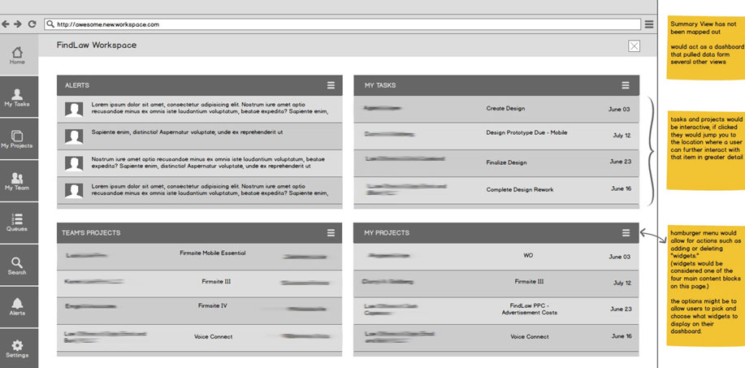
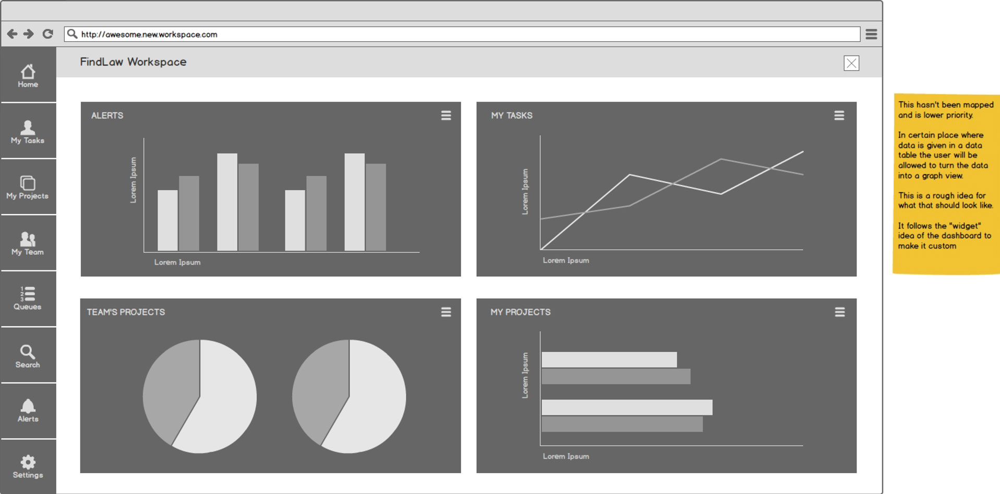
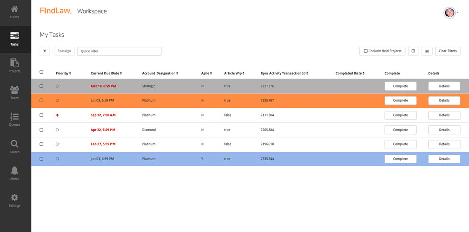
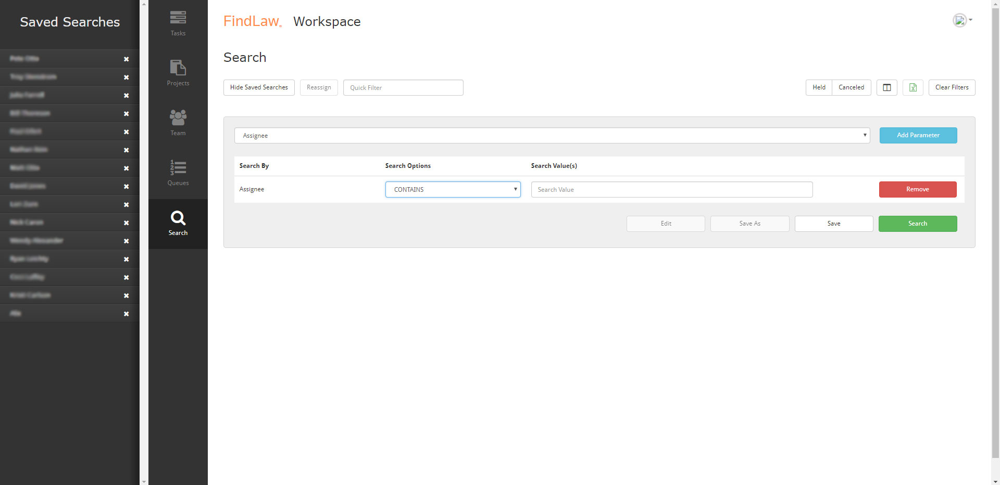
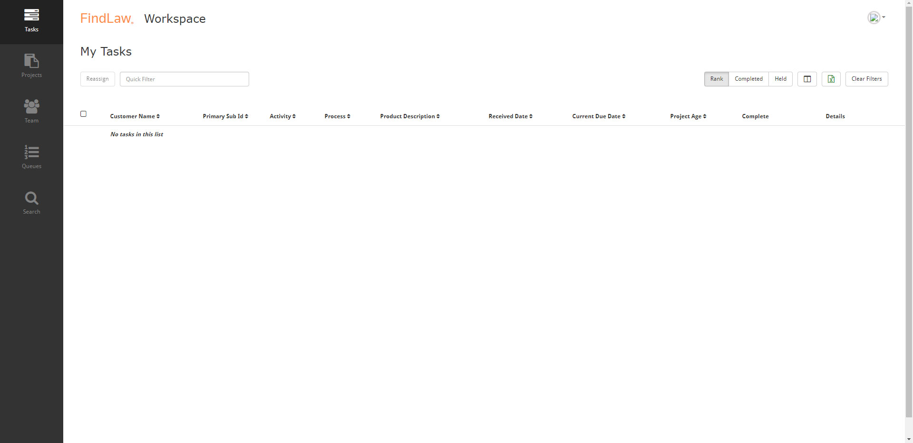

FindLaw Workspace
The "FindLaw Workspace" is a comprehensive web-based platform designed for task and project management. This project focuses on enhancing productivity through an interactive, user-friendly dashboard that integrates task tracking, project visualization, and advanced search capabilities. The workspace emphasizes flexibility, customization, and data-driven insights to meet the diverse needs of teams and individual users.
This project delivers a robust and adaptable solution for managing tasks, projects, and team collaborations. It balances ease of use with powerful tools for filtering, tracking, and visualizing data, making it an indispensable platform for users looking to streamline their productivity.

Dashboard Interface: This image is a wireframe of the "FindLaw Workspace" dashboard, divided into four main widgets: Alerts, My Tasks, Team's Projects, and My Projects. It features a collapsible sidebar with navigation options and a header containing the workspace title and a customizable hamburger menu for managing widgets. Notes on the right describe potential features like interactivity for tasks, widget customization, and a future summary view to aggregate data from different sections.

Data-Driven Summary Dashboard: This image is a wireframe for a data-driven dashboard in "FindLaw Workspace," featuring four widgets: Alerts, My Tasks, Team's Projects, and My Projects, each displayed as different types of charts (bar, line, pie, and horizontal bar, respectively). The sidebar on the left provides navigation to key sections, maintaining consistency with the overall interface. Notes on the right mention this as a conceptual visualization for data table-to-graph conversion and highlight the customizable nature of the widget layout.

Task Management: This image shows a "My Tasks" interface in the "FindLaw Workspace," featuring a task table with columns for priority, due date, account designation, and other task details. Tasks are color-coded to indicate urgency, with actions available through "Complete" and "Details" buttons for each row. The page includes filtering tools, a quick filter bar, and a sidebar for navigation, highlighting "Tasks" as the active section.

Search Functionality: This image displays the "Search" interface of the "FindLaw Workspace," where users can build and save customized search queries. The layout includes a left panel for managing "Saved Searches," which lists preconfigured filters that can be edited or removed, and a main panel for creating or modifying search parameters using dropdown menus and input fields. Action buttons allow users to execute, save, or refine searches, while options for toggling filters and search visibility enhance usability.

Empty State Handling: This image shows the "My Tasks" page in the "FindLaw Workspace," featuring an empty task table with columns for details such as customer name, activity, process, and due dates. The interface includes controls for filtering, reassigning, and toggling task views, with additional buttons for clearing filters and managing task statuses (e.g., completed, held). The sidebar on the left highlights "Tasks" as the active section, and the design emphasizes clarity and organization for task management.